Luke Skywalker has returned to
his home planet of Tatooine in
an attempt to rescue his
friend Han Solo from the
clutches of the vile gangster
Jabba the Hutt.
Little does Luke know that the
GALACTIC EMPIRE has secretly
begun construction on a new
armored space station even
more powerful than the first
dreaded Death Star.
When completed, this ultimate
weapon will spell certain doom
for the small band of rebels
struggling to restore freedom
to the galaxy...
Timeline
1997 | Special Edition release
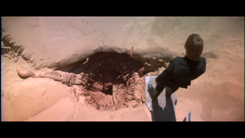This shot now has the new Sarlacc.
2004 | Special Edition DVD release
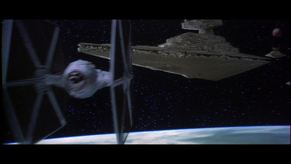The compositing on this TIE fighter was improved, as its lower wings appeared transparent in the original film.
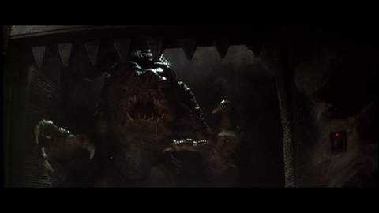
Text.
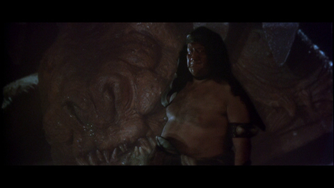
The rancor keeper gets a digital re-composite, more effectively marrying him to his miniature background.
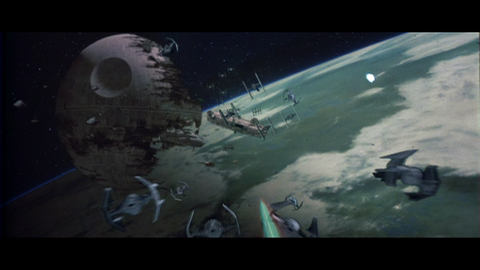
A recomposite of this dense shot has resulted in better outlines around the TIE ships. Also, the Falcon's laser blast is now the correct color.
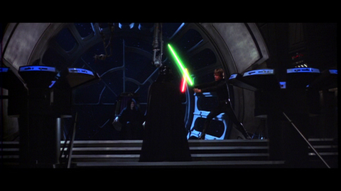
Text.
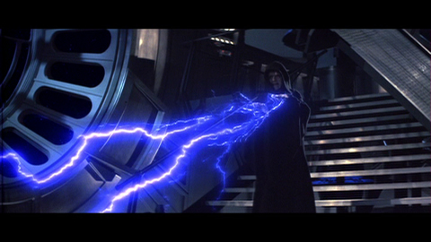
Text.

In 2004, Anakin Skywalker's bushy eyebrows have been digitally removed to better suit the depiction of a burn victim here. In addition, Anakin's eye color has been adjusted to match his prequel trilogy depiction.
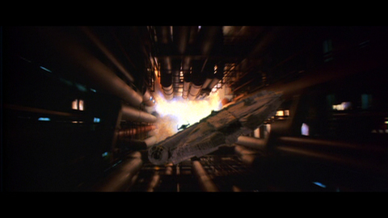
Text.
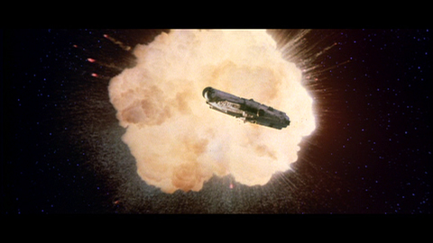
The explosion of the Death Star now features a ring-like shockwave, and the Falcon element has been digitally recomposited.
2011 | Special Edition Blu-ray release
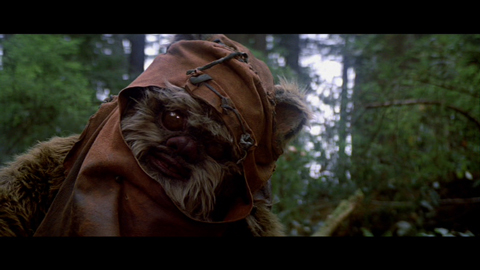The eyes of the Ewoks have been revised with irises and pupils. Eyelids were also added with a blinking motion.
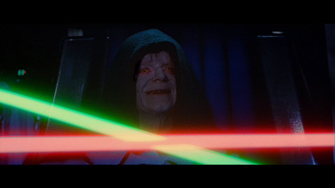
Text.